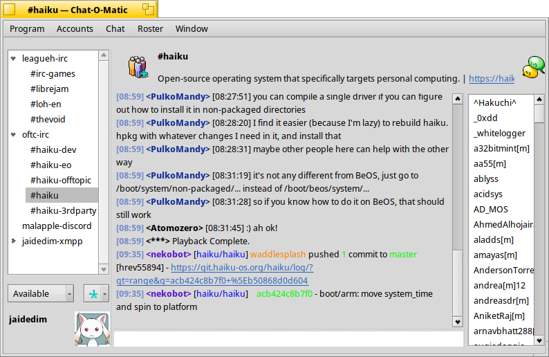
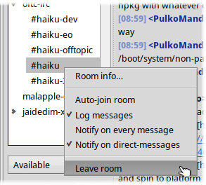
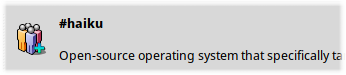
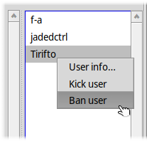
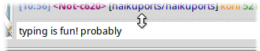
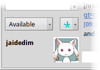
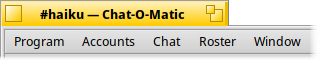

Chat-O-Matic is a multi-protocol chat program based on
Caya, which has its own roots in the
IM kit project. Several protocols are supported,
including IRC,
XMPP, and more through
libpurple.
Lists all joined chats that are attached to the current window, ordered by account.
Clicking a chat will select it, changing the text buffer,
user-list, and room header. If you
click on an account's list item, then that account's logs will be shown instead: This
might include anything from MOTDs to error messages,
depending on the protocol. If you right-click on a room's list item, you can toggle several per-room options,
including: This little section displays a room's name, topic, and icon. If you have permission to, you can also change a room's topic by clicking on the topic
text, typing what you'd like it to be, and hitting ENTER. After
hitting ENTER, the text will change back to the previous topic,
pending the protocol or server— after which it will update to the new topic. Here, the room name is “#haiku” and the topic “Open-source operating system […].” This area has a calm, undemanding job— show a list of users in the room. On
right-clicking a user item, you'll see a pop-up menu with at least User info….
Depending on your user's permissions, you might see more than User info… in the
user-list pop-up menus: Ban user, Kick user, Mute user,
Deafen user, and their reciprocals (Unmute user, Undeafen user). By moderating through this right-click menu, though, you can't attach a message—
sometimes, for example, it's useful to give the victim a reason that you've kicked them
in the shins. For that, you can moderate through commands as well. With the text-box, you can send messages and run commands. Type what you like, and hit
ENTER to send. If you're typing someone's username or nickname,
hitting TAB can auto-complete it. Messages don't necessarily have to be only one line long— hence why you can resize the
text-box. ALTENTER starts a new line. If
you get lost, Page↑ and Page↓ are your
friends. Commands let you perform some special action— they vary by protocol, but there are
some standard ones you can expect to work: As you might be able to tell, most of these are just aliases for
moderation through the user list. In the status area, you can see your avatar (how cute!), change your nickname, and update
your current status. Clicking on the nickname text-box (here it's “jaidedim”), you can then edit your nickname,
hitting ENTER to update. After hitting
ENTER, the text will change back to your previous nickname, pending
the protocol or server— after which it will update to the new nickname. The status drop-down menu lets you change the status for the currently selected account
(here it's “Available”). There is, next to the status menu, an account menu. By default “All” (the asterisk) is
selected, meaning that any changes to status or nickname will apply to all accounts. If
you'd like to change the nick or status of only a single account, you can select it from
this menu. In the Program menu, you'll find:
In the Accounts menu, you'll find a list of your accounts for
easy management. Through this menu, you can also select the Accounts→Manage accounts…
item to see the account management window, which lets you add and remove accounts. In the Chat menu, you'll find:
Main window

Room list

Room options
Flag Description Default Auto-join
If the room will be joined after every start-up ✓
Log messages
Whether or not messages will be logged to disk ✓
Notify on every message
Notify if any message is sent to the room ❌ Notify on direct-messages
Notify if the user is mentioned, or if message received in one-on-one
chat ✓ Room header

User list

Moderation
Chat input

Commands
Command Description /help List all commands for the current protocol
/invite USER Invite a user to the current room
/kick USER MESSAGE Disconnect a user from the current room
/ban USER MESSAGE Disconnect a user and prevent them from re-joining
/unban USER Undo a user's ban
/deafen USER Prevent a user from receiving any messages
/undeafen USER Undo a user's deafening
/mute USER Prevent a user from sending messages
/unmute USER Undo a user's muting
Status area

Menu-bar

Chat→Find… (ALTF) will open a
TextSearch window for searching the current room's logs (so long as logging
is enabled). The other items are related to
room creation/joining.
In the Roster menu, you'll find:
In the Window menu, you'll find two items that make switching between rooms faster— Window→Up (ALT↑) and Window→Down (ALT↓).
Selecting Program→Preferences through the menu-bar (ALT ,), you'll see the Preferences window. Most of the options should be self-explanatory, but there a couple that are noteworthy:
The Notifications tab lets you toggle whether or not you receive message-related notifications and whether or not you'll be notified on a connection/disconnection.
You can also attach specific sounds to notifications through Haiku's Sounds preferences, brought up through the Edit sounds… button. The beeps configurable through Sounds are Chat-O-Matic mention and Chat-O-Matic message.
Roster and user-selection windows (as in Roster→Edit roster…, Roster→Invite user… and Chat→New chat… from the menu-bar) display a list of your contacts, allowing you to select one.
Through the account drop-down menu in the bottom-left corner, you can filter the list, showing only contacts of a specific account. In this example, “jaidedim-xmpp“, an XMPP account, is selected.
By typing into the text-box at the top of the window, you can search through the shown contacts— here, all contacts matching “Ash” are shown. If you have an account selected, you can also use this text-box to manually type in a username for selection. In this window, since a specific account is selected, “Select user Ash…” is an item in the list.
With Chat→Join room… and Chat→New room… in the menu-bar (ALTJ and ALTN, respectively), you'll see a window like the one above. For each protocol, the options and text-boxes shown will differ— for IRC, as in this image, the only option is the channel-name.
You can select the account to join/create from through the account drop-down menu in the bottom-left corner. Here, the account “oftc-irc” is selected, an IRC account.
Chat→Create chat… (ALTM), in contrast, is used for creating one-on-one chats, and opens a user-selection window instead.
The room directory (accessible though Chat→Room directory… in the menu-bar) lets you browse and join publically listed chatrooms— a feature used extensively for IRC, XMPP, and some libpurple add-ons.
Like other dialogues in Chat-O-Matic, you can select a specific account to act on though the bottom-left account dropdown menu. In this image, “All” accounts is selected, so rooms available to all the user's accounts are shown.